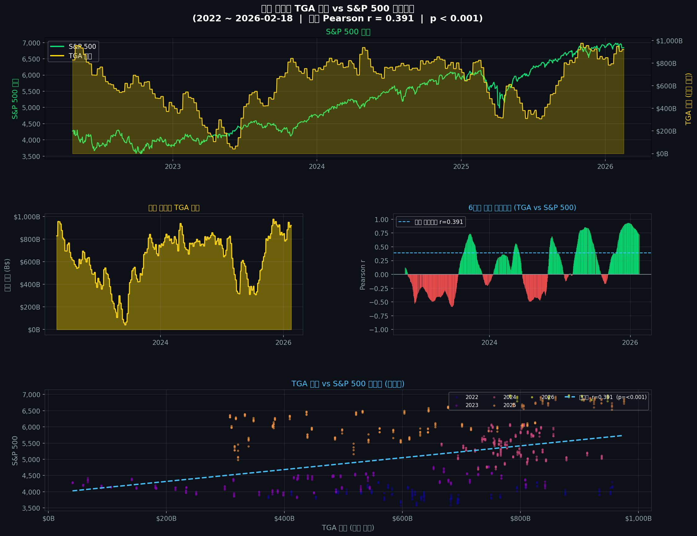

데이터 소스 (지수)
Yahoo Finance
^GSPC · 일별 종가
업데이트 주기
매 영업일
GitHub Actions 자동 실행 (UTC 01:00)
마지막 업데이트
—
GitHub Actions에 의해 자동 갱신

📌 차트 해석 가이드
TGA 잔고는 미국 재무부가 연방준비은행에 보유한 운영 자금입니다.
잔고가 줄어들면 재무부가 시중에 자금을 공급하는 효과가 생겨 유동성이 늘어납니다.
반대로 잔고가 급격히 늘어나면 시중 자금이 흡수됩니다.
롤링 상관계수가 양(+)이면 TGA와 S&P 500이 같은 방향으로 움직이고,
음(-)이면 반대 방향입니다. 부채 한도 협상 시즌에 특히 큰 변동이 나타납니다.